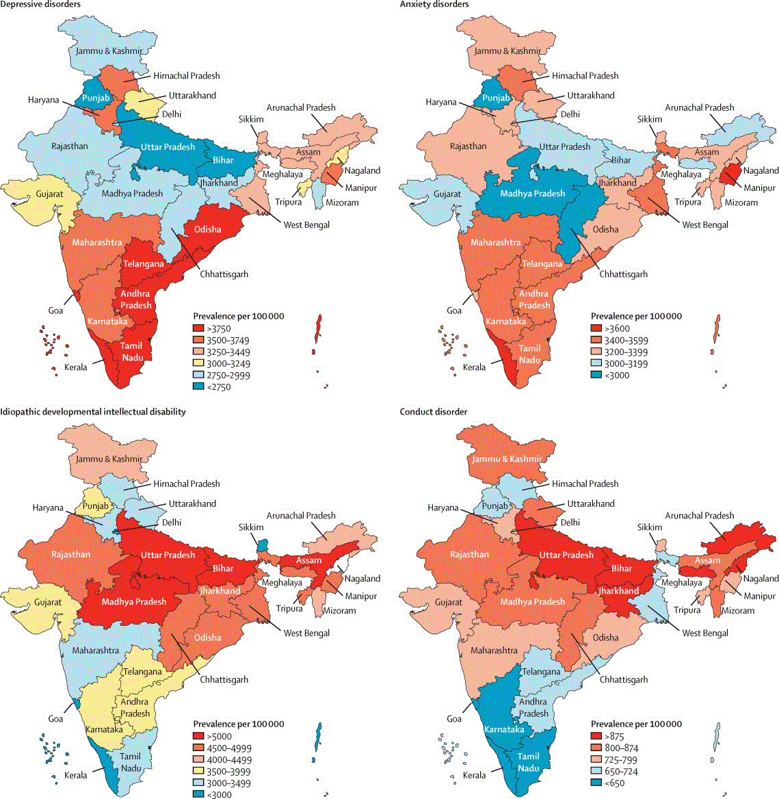
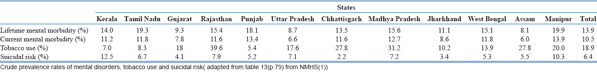
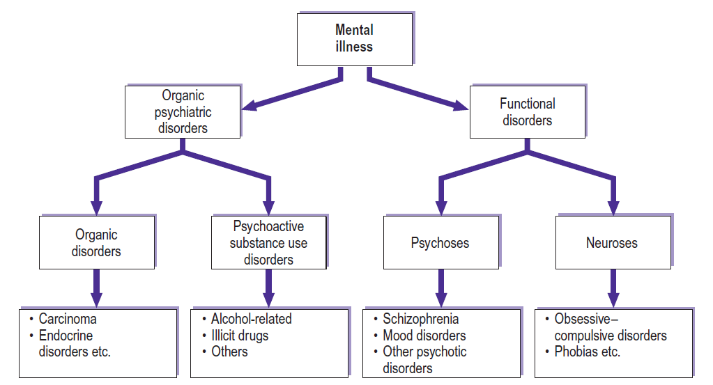
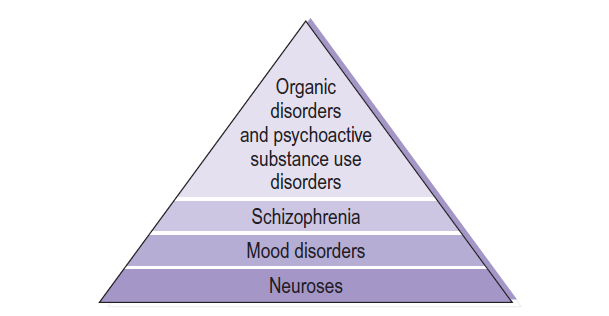
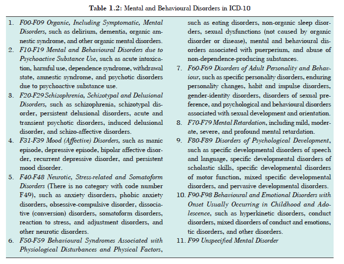
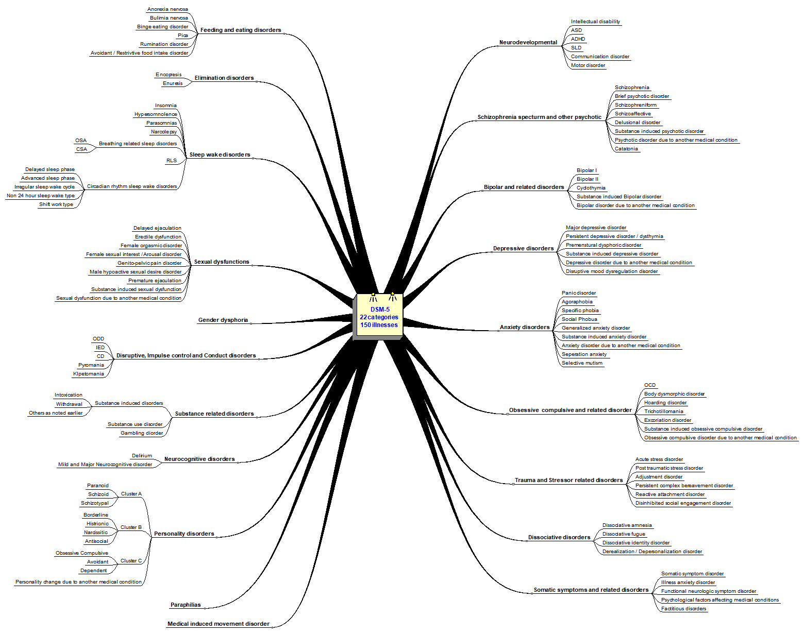
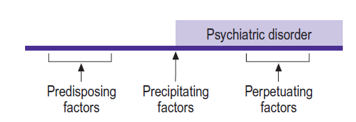
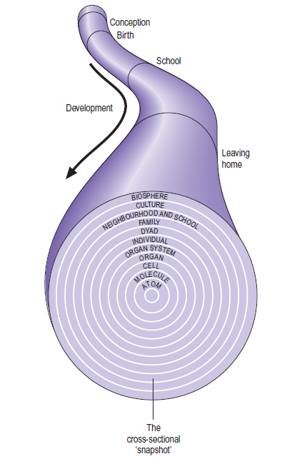

Chapter 2: Introduction to Psychiatry
1. What is Health?
2. What is normal mental health?
3. Definition of a mental disorder
4. Why focus on mental health?
5. Stigma and mental health
6. What is Psychiatry?
7. Who is an Psychiatrist?
8. What Is the Difference Between a Psychiatrist and Psychologist?
9. Classification in Psychiatry & Aetiology of Psychiatric disorders
What is Health?
Health is a state of complete physical, mental and social well-being, and not merely absence of disease or infirmity. (WHO)
What is normal mental health?
Although, normality is not an easy concept to define, some of the following traits are more commonly
found in ‘normal’ individuals.
1. Reality orientation.
2. Self-awareness and self-knowledge.
3. Self-esteem and self-acceptance.
4. Ability to exercise voluntary control over their behaviour.
5. Ability to form affectionate relationships.
6. Pursuance of productive and goal-directive activities.
Models of normality
-Medical model
-Statistical model
-Utopian model
-Subjective model
-Social model
-Process model
-Continuum model
Definition of a mental disorder
Mental disorder is as a clinically significant psychological or behavioural syndrome that causes significant (subjective) distress, (objective) disability, or loss of freedom; and which is not merely a socially deviant behaviour or an expected response to a stressful life event (e.g. loss of a loved one). Conflicts between the society and the individual are not considered psychiatric disorders. A psychiatric disorder should be a manifestation of behavioural, psychological, and/ or biological dysfunction in that person (Definition modified after DSM-IV-TR, APA).
Why focus on mental health?
 |
Figure: Crude prevalence of major mental disorders in the states of India, 2017, Lancet link |
Table 1: Crude prevalence rates of mental disorders, tobacco use and suicidal risk  The overall weighted prevalence for any mental morbidity was 13.7% lifetime and 10.6% current mental morbidity. link |
Globally only 1% of the health workforce works in mental health Of these 1% only 8% are psychiatrist 45% of the worlds population live in a country with less than 1 psychiatrist per 100,000 population India has 0.6 mental health beds in General Hospitals per 100,000 population |
Stigma and mental health
People stigmatize others when they judge them not on their personal qualities but on the basis of a mark or label which assigns them to a feared or unfavoured group. The tendency to stigmatize seems to be deeply rooted in human nature as a way of responding to people who appear or behave differently. Stigmatization is based on fear that those who seem different may behave in threatening or unpredictable ways, and it is reduced when it becomes clear that the stigmatized person is unlikely to behave in these ways.
The basis of stigma of mental illness is the fear that people with mental illness cannot control their own behaviour, and that they may act in odd, unpredictable, and possibly violent ways. Other important components of stigma related to mental illness or persons with mental illness are:
● people with mental illness are unpredictable
● people with mental illness feel different from the rest of us
● people with mental illness are hard to talk and relate to
● mental illness cannot be cured, and people with mental illness do not recover.
To reduce stigma it is necessary to reduce fear, and this requires accurate information about mental illness and better understanding of mentally ill people.
What is Psychiatry?
Psychiatry is the branch of medicine focused on the diagnosis, treatment and prevention of mental, emotional and behavioural disorders.
Who is a Psychiatrist?
A psychiatrist is a medical doctor (completed medical school and residency) with special training in psychiatry. A psychiatrist is able to conduct psychotherapy and prescribe medications and other medical treatments.
What Is the Difference Between a Psychiatrist and Psychologist?
A psychologist usually has an advanced degree, most commonly in clinical psychology, and often has extensive training in research or clinical practice. Psychologists treat mental disorders with psychotherapy and some specialize in psychological testing and evaluation.
Classification in Psychiatry & Aetiology of Psychiatric disorders
A. Types of psychiatric disorders

As shown in the figure, most psychiatric disorders can be divided into organic psychiatric disorders, which are secondary to known physical causes, and ‘functional’ disorders. As research in the neurosciences progresses, the underlying physical causes of the functional disorders are being discovered, for example at a neuronal, genetic and biochemical level. Therefore, it could be argued that the traditional dichotomy between organic and functional disorders is gradually becoming less appropriate.
Organic psychiatric disorders: Psychiatric symptoms can be caused by organic disorders, such as cerebral tumours and endocrine disorders. For example, depressed mood may result from hypothyroidism or from primary hypoadrenalism (Addison’s disease). Psychiatric symptoms can also result from the abuse of alcohol and drugs, that is, psychoactive substance use disorders. For example, soon after injecting amphetamine intravenously, a drug abuser may experience and exhibit symptomatology indistinguishable from that seen in acute schizophrenia.
Functional disorders
Psychoses: In psychoses there is loss of contact with reality. The symptoms that occur are not readily understandable and can include:
- hallucinations
- delusions
- several abnormalities of behaviour, e.g. gross excitement and overactivity, marked psychomotor retardation, catatonic behaviour
- lack of insight.
Neuroses: In neuroses, or psychoneuroses, the symptoms that occur are understandable and it is possible to empathize with them. The symptoms differ from normal in a quantitative but not a qualitative way. For example, most normal people have experienced anxiety; the more severe neurotic counterpart of this is an anxiety disorder (of which there are several types). Similarly, most normal people will have rechecked something once or twice, for example that their front door is locked or that they have switched off the iron. In the more severe neurotic counterpart of this, obsessive–compulsive disorder, rechecking may occur repeatedly many times.
B. Diagnostic hierarchy

Diagnostic hierarchy - A given diagnosis takes precedence over those below it.
The highest level in this hierarchy takes precedence over those below it when a diagnosis is being made. For example, if an otherwise well patient presents with symptoms seen in acute schizophrenia, which turn out to be secondary to intravenous amphetamine abuse, then the diagnosis is psychoactive substance use disorder and not schizophrenia. Similarly, if a patient with chronic schizophrenia has depressive symptoms, the diagnosis is schizophrenia rather than a mood disorder.
Developmental and behavioural disorders: There are a number of developmental and behavioural disorders that are not usually classed under the organic psychiatric disorders, psychoses or neuroses. These include personality disorders, learning disability (mental retardation), eating disorders and psychosexual disorders. It is possible to see both a developmental or behavioural disorder and an organic, psychotic or neurotic disorder in the same patient. In such cases both diagnoses are given. For example, a patient with a personality disorder may also suffer from a depressive disorder. A patient with a learning disability may in addition suffer from schizophrenia.
C. Classification of Psychiatric disorders
1. System of classification in ICD-10

2. System of classification in DSM-5

D. Aetiology of Psychiatric disorders
1. Chronological classification
A psychiatric disorder in a single patient can have multiple causes. These can usefully be classified chronologically into predisposing, precipitating and perpetuating factors for a given patient.

- Predisposing factors are those predisposing a person to being vulnerable to suffering from a psychiatric disorder. Examples include the person’s genetic makeup and personality, and obstetric complications.
- Precipitating factors are those arising just before a psychiatric disorder starts and which appear to have precipitated it. Examples include life events, such as the death of a parent.
- Perpetuating factors are those causing an existing psychiatric disorder to continue. An example is social withdrawal, which itself is often a result of psychiatric disorders (such as depression and schizophrenia).
2. Individual causes
A model is a device for ordering information. Like a theory, it seeks to explain certain phenomena, but it does so in a broad and comprehensive way that cannot readily be proved false. Various aetiological models have been described for psychiatric disorders e.g. reductionist neuroscience or biological model or non-reductionist biopsychosocial model. Both aetiological models may be valid, but each would suggest different forms of research activity and therapeutic intervention.
The biopsychosocial model has proved useful in medicine particularly in studying infectious diseases. A disease entity is identified in terms of a consistent pattern of symptoms, a characteristic clinical course, and specific biochemical and pathological findings. When an entity has been identified in this way, a set of necessary and sufficient causes is sought. In the case of tuberculosis, for example, the tubercle bacillus is the necessary cause, but it is not by itself sufficient. However, the tubercle bacillus in conjunction with either poor nutrition or low resistance is sufficient cause.

The biopsychosocial model helps do a cross sectional assessment of a current problem in various systemic and developmental spheres.
Biological factors
- Genetic: play an important role in many psychiatric disorders, including schizophrenia, mood disorders, a number of individual causes of learning disability such as Down’s syndrome. For many psychiatric disorders, the main causative or contributing genes are not currently known. In such cases, the role of genetic factors can be investigated through family studies, twin studies, adoption studies and studies in molecular genetics.Studies in molecular genetics aim to characterize causative genes.
- Biochemical and neurotransmitters: Neurotransmitter level changes in certain areas of the brain have been implicated in causes psychiatric illness e.g. monoamine hypothesis of mood disorders states that depression with associated with depletion of central functional serotonin. depression in understood to be caused due to low levels of serotonin in
- Psychoneuroendocrinological: Mood disorders are associated with a number of endocrinopathies, such as Cushing’s syndrome, Addison’s disease and thyroid disorders. Disturbances of the hypothalamic–pituitary–adrenal axis have been reported in depression.
- electrophysiological: An important cause of some psychiatric symptoms is epilepsy, particularly that affecting the temporal lobe (complex partial seizures of the temporal lobe or temporal lobe epilepsy). For example, complex partial seizures can give rise to features typical of schizophrenia.
- Neuropathological and neuroanatomical: Structural neuroimaging studies show that cerebral ventricular enlargement is present in a proportion of patients with schizophrenia. Post-mortem neuropathological studies have revealed changes in the cytoarchitecture of the temporal lobes and limbic system in schizophrenia.
- Prenatal, perinatal factors and infections: Prenatal infection can affect the developing brain in utero and may cause or predispose an individual to certain psychiatric disorders, such as learning disabilities and possibly schizophrenia, (similarly with perinatal head injury during a prolonged forceps delivery, for example, and prolonged hypoxia).
Psychosocial factors
- One important group of psychological causes involves behavioural (learning) theory. Learning can be defined as a relatively permanent change in behaviour brought about as a result of prior experience. It may occur through associations being made between two or more phenomena. Two forms of such associative learning are recognized: classical conditioning and operant conditioning.
- Cognitive learning is a more complex process in which current perceptions are interpreted in the context of previous information in order to solve unfamiliar problems.
- Social learning theory is based on evidence that learning can also take place through the observation and imitation of others (modelling).
- Psychodynamic factors are concerned with unconscious processes that can lead to such psychiatric disorders as conversion disorders.
Social factors
- Major stressful events are sometimes associated with the onset of psychiatric disorders. Examples include marriage, divorce, the death of a loved one and losing one’s job. They are known as life events. Another psychosocial stressor that can be important is migration.
- Long-term unemployment can lead to low morale, poor self-esteem, social isolation and depressed mood. These, in turn, can act as perpetuating factors not only for depression but also for other psychiatric disorders such as schizophrenia.
- Social class and marital status: There is often a relationship between the incidence and prevalence of psychiatric disorders and social class and marital status. The direction of causality is not necessarily from social class to the disorder. In schizophrenia, for example, the disorder can lead to social drift downwards.
Bibliography
1. APA - https://www.psychiatry.org/patients-families/what-is-psychiatry-menu
2. Ahuja Short textbook of Psychiatry 7e.
3. WHO mental health atlas
3. DSM-5
4. ICD-10
5. Shorter Oxford Textbook of Psychiatry.
6. Textbook of Psychiatry 2e.
Created with the Personal Edition of HelpNDoc: Easily create Web Help sites